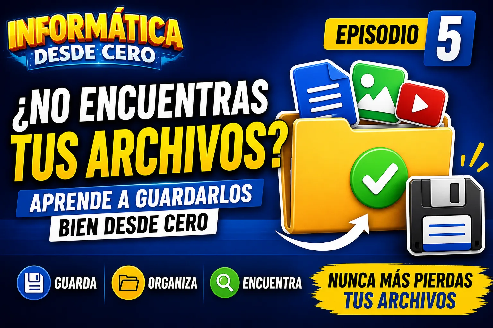

Ruta especial · Informática desde Cero
¿No encuentras tus archivos?
Aprende a guardarlos bien desde el inicio

Guía de apoyo
Bienvenido al Episodio 5 de la serie “Informática desde Cero”, donde aprenderás paso a paso cómo guardar archivos correctamente y encontrarlos cuando los necesites.
Ruta Informática desde Cero
Este tutorial forma parte de una ruta especial para aprender desde lo básico.